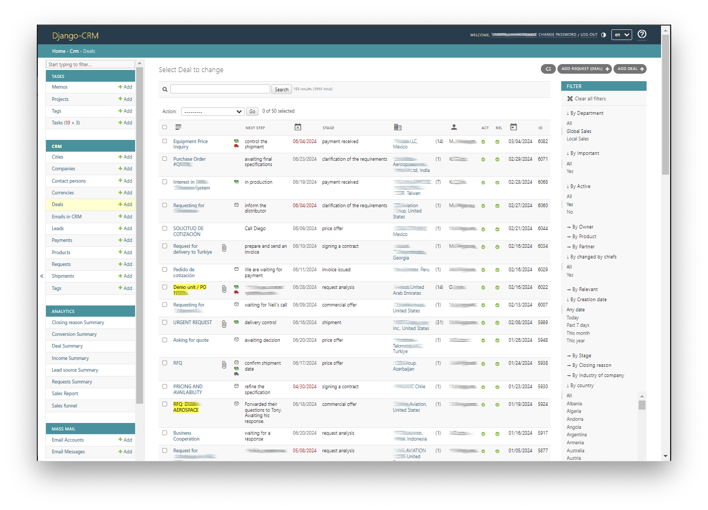
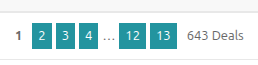
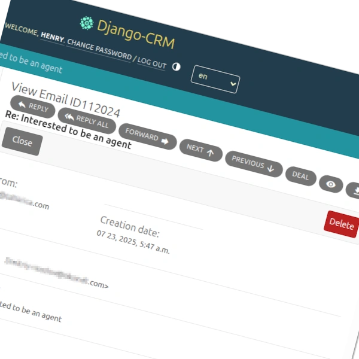

Головна
Чим Django CRM відрізняється?
Django-CRM — це система управління відносинами з клієнтами (CRM), розроблена з двома основними цілями:
- Для бізнес-користувачів: надати професійне відкрито-кодове CRM-програмне забезпечення з усіма інструментами для управління клієнтами, продажами та робочими процесами — абсолютно безкоштовно та під відкритою ліцензією.
-
Для супроводжувачів і розробників: значно спростити:
- настройку програмного забезпечення
- розгортання та підтримку продакшн-сервера
- розробку та розширення функціональності
Доступ до бізнес-даних компанії залишається виключно під її контролем.
Це CRM ідеально підходить для компаній, які хочуть повністю контролювати своє CRM-рішення без прив’язки до постачальника.
Django CRM побудований повністю на широко відомому фреймворку Django Admin. Це означає, що більшість розробників і інтеграторів Python/Django легко зможуть зрозуміти, налаштувати та розширити систему — скорочуючи час впровадження та довгострокові витрати на підтримку в порівнянні з подібними продуктами.


З часом CRM-системи неминуче накопичують великі обсяги даних щодо лідів, контактів, завдань та взаємодій. Табличне представлення з гнучкими параметрами фільтрації та сортування допомагає користувачам швидко знаходити потрібні записи, аналізувати ключові деталі та ефективно керувати щоденними операціями — навіть коли обсяг даних зростає. Такий формат підтримує швидше прийняття рішень і скорочує час на навігацію складною інформацією.


Повний набір функцій CRM-програмного забезпечення
- Управління контактами – зберігайте та керуйте інформацією про клієнтів, їх взаємодіями та активністю
- Відстеження продажів – відстежуйте ліди, можливості та угоди для покращення результатів продажів
- Управління задачами CRM – створюйте та призначайте завдання співробітникам для кращої співпраці та продуктивності
- CRM-аналітичне програмне забезпечення – генеруйте звіти та аналізуйте дані для прийняття обґрунтованих бізнес-рішень
- CRM email-маркетинг – надсилайте персоналізовані email-кампанії безпосередньо з CRM
- Локалізація проєкту – сервіс обслуговування клієнтів тепер доступний більш ніж 20 мовами
Поширені проблеми, з якими стикаються клієнти SaaS CRM
1. Висока вартість підписки при низькому використанні функцій
- Компанії платять великі річні збори за ліцензії SaaS CRM.
- Зазвичай використовується лише 20–30% функцій.
- Корисні функції часто заблоковані в дорогих “преміум” тарифах.
2. Жорсткі робочі процеси, які не відповідають потребам бізнесу
- SaaS-платформи змушують бізнес адаптовувати свої робочі процеси під стандартні структури CRM.
- Налаштування бізнес-логіки (наприклад, алгоритмів оцінки лідів) потребує дорогих плагінів, консультантів або обхідних шляхів.
- Вбудовані інструменти є загальними і часто не справляються з потребами конкретної галузі.
3. Налаштування руйнуються під час оновлень платформи та прив’язка до постачальника
- Кастомні функції або інтеграції часто ламаються при кожному оновленні платформи.
- Міграція на іншу платформу навмисно ускладнена і дорога.
- Компанії потрапляють в залежність від постійно зростаючих підпискових витрат через складність переходу.
4. Приховані витрати: інтеграція, консалтинг та ручна робота
- Інтеграція сторонніх інструментів або внутрішніх систем пов’язана з високими витратами на консалтинг.
- Команди витрачають час на ручні процеси (експорт даних, кастомні звіти), бо автоматизація обмежена або зламані.
- Втрачену продуктивність не враховують у розрахунках ROI, але вона має реальний вплив на бізнес.
5. Повільна реакція на унікальні вимоги
- Запити на функції або необхідні зміни залежать від графіка розробки постачальника.
- Критично важливі бізнес-вимоги часто мають низький пріоритет для великих CRM-виробників.
- Бізнес змушений чекати або переходити на дорогі кастомні розробки поверх уже дорогих платформ.
Як Django CRM вирішує ці проблеми
1. Безкоштовне програмне забезпечення з відкритим кодом без витрат на користувача
- Django CRM — це безкоштовне програмне забезпечення з відкритим кодом — без ліцензійних платежів і витрат на кожного користувача.
- Ви повністю володієте кодом і даними, без прив’язки до постачальника.
- Початкові витрати на розробку можуть бути компенсовані в довгостроковій перспективі за рахунок нижчих операційних витрат.
2. Повністю налаштовувані моделі даних та логіка
- Django CRM дозволяє безпосередньо змінювати логіку CRM та моделі даних.
- Ви можете реалізувати кастомну оцінку лідів, унікальні продажні процеси або галузеві робочі процеси, адаптовані до вашого бізнесу.
- Не потрібно збирати різні зовнішні інструменти або змушувати процес підлаштовуватись під загальні шаблони CRM.
3. Стабільні налаштування, що знаходяться під вашим контролем у власному CRM
- Ви самі вирішуєте, коли й як оновлювати CRM.
- Кастомні функції є частиною вашого кодового базису — а не крихкими зовнішніми плагінами, які ламаються під час оновлень постачальника.
- Міграція завжди можливі, адже весь застосунок знаходиться під вашим контролем.
4. Ефективні інтеграції через екосистему Django/Python
- Модульна архітектура Django робить інтеграції API та автоматизацію простими.
- Ви уникаєте власних “ринків інтеграцій” зі прихованими комісіями.
- Внутрішні системи, кастомні інформаційні панелі та сценарії автоматизації можуть безперешкодно працювати в одному стеку технологій.
5. Гнучка реакція на потреби бізнесу
- Цикли розробки визначаються не постачальником, а вашою командою.
- Нові функції можна додавати поступово саме тоді, коли вони потрібні.
- Django CRM створений для розширення, тому ідеально підходить для еволюційних бізнес-вимог.
CRM-додаток

CRM — це безкоштовний застосунок управління відносинами з клієнтами з відкритим кодом, побудований на фреймворку Django, призначений для малого бізнесу, щоб ефективніше керувати воронкою продажів та даними клієнтів.
Цей CRM-додаток централізує ключові процеси — такі як: відстеження лідів, управління угодами та внутрішня комунікація — в єдину, оптимізовану систему.
З такими функціями, як контроль доступу за ролями, розширені фільтри пошуку, інтегрована електронна пошта та VoIP-комунікація, а також автоматична обробка запитів, команда може працювати в співпраці та залишатися організованою.
CRM-додаток також дає змогу відстежувати платежі, керувати задачами та отримувати аналітику через вбудовані звіти та аналітичні панелі щодо воронки продажів.
Кастомні ролі та дозволи роблять його адаптованим до будь-якої організаційної структури, забезпечуючи кожному користувачу потрібний рівень доступу. Нехай ви обробляєте комерційні запити, управляєте контактами або аналізуєте показники продажів — CRM допомагає автоматизувати та спростити ваш робочий процес.
Як гнучке та повністю задокументоване рішення, воно ідеально підходить компаніям, які хочуть розгорнути масштабований та налаштовуваний CRM-додаток без прив’язки до постачальника.
CRM для продажів
Легке налаштування та розробка проєкту
CRM створений з урахуванням гнучкості, тому його легко налаштовувати та розширювати для будь-яких бізнес-потреб. Незалежно від того, чи додаєте ви нові функції, інтегруєте сторонні сервіси або змінюєте існуючі робочі процеси, кодова база проста для розуміння та розширення.
Як Python-CRM, він використовує потужний фреймворк Django для забезпечення швидкої розробки та простих інтеграцій зі сторонніми інструментами. Завдяки повторно використовуваним компонентам і чіткій документації адаптація CRM до вашої унікальної бізнес-логіки потребує мінімум зусиль.
Розробники можуть додавати нові функції, коригувати робочі процеси або підключати зовнішні API без зайвої складності. Проєкт відповідає кращим практикам Django, що спрощує його підтримку та оновлення. Завдяки чіткій документації та активній підтримці спільноти початок роботи швидкий і ефективний.
CRM та email-маркетинг
CRM поєднує потужні інструменти управління клієнтами з вбудованими можливостями email-маркетингу, роблячи його повним рішенням для mailing CRM.
Користувачі можуть запускати персоналізовані email-кампанії, керувати списками підписників і відстежувати залучення — все з одного інтерфейсу CRM.
Листи прив’язані безпосередньо до компаній, контактних осіб і лідів, забезпечуючи єдину історію комунікації.
Функції масової розсилки дозволяють проводити цільові новини/розсилки без залежності від зовнішніх інструментів.
Розширена сегментація клієнтів дає змогу точково таргетувати аудиторію за допомогою фільтрів, визначених користувачем.
З автоматичною синхронізацією електронної пошти та відстеженням за квитками ви можете підтримувати послідовний зв’язок із клієнтами у великому масштабі.
Як CRM з електронною поштою, система спрощує комунікацію, і ваша команда залишається в курсі кожної взаємодії.
CRM та email-маркетинг

